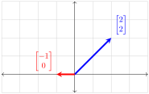

First, observe that \([2,2]\) and \([-1,0]\) are not scalar multiples of each other.

Geometrically, we can use [cross-reference to target(s) "pro-lincombgeo" missing or not unique] to express any vector of \(\R^2\) as a linear combination of \([2,2]\) and \([-1,0]\text{,}\) indicating that the two vectors span all of \(\R^2\text{.}\)
To verify this claim algebraically we will show that an arbitrary vector \([s,t]\) of \(\R^2\) can be written as a linear combination of \([2,2]\) and \([-1,0]\text{.}\)
Consider the vector equation:
\begin{equation*}
a_1\begin{bmatrix}2\\2\end{bmatrix}+a_2\begin{bmatrix}-1\\0\end{bmatrix}=\begin{bmatrix}s\\t\end{bmatrix}.
\end{equation*}
This corresponds to the system:
\begin{equation*}
\begin{array}{ccccc}
2a_1 \amp -\amp a_2\amp = \amp s \\
2a_1\amp \amp \amp = \amp t \\
\end{array}.
\end{equation*}
Writing the system in augmented matrix form and applying elementary row operations gives us the following reduced row-echelon form:
\begin{equation*}
\left[\begin{array}{cc|c}
2\amp -1\amp s\\2\amp 0\amp t
\end{array}\right]\rightsquigarrow\left[\begin{array}{cc|c}
1\amp 0\amp t/2\\0\amp 1\amp t-s
\end{array}\right].
\end{equation*}
This shows that every vector of \(\R^2\) can be written as a linear combination of \([2,2]\) and \([-1,0]\text{:}\)
\begin{equation*}
(t/2)\begin{bmatrix}2\\2\end{bmatrix}+(t-s)\begin{bmatrix}-1\\0\end{bmatrix}=\begin{bmatrix}s\\t\end{bmatrix}.
\end{equation*}
We conclude that
\begin{equation*}
\text{span}\left(\begin{bmatrix}2\\2\end{bmatrix}, \begin{bmatrix}-1\\0\end{bmatrix}\right)=\R^2.
\end{equation*}